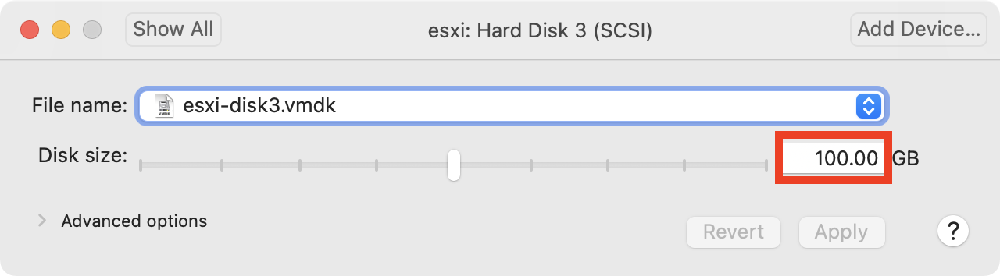

Foundry Appliance {version}
Welcome to the Foundry Appliance. This virtual machine hosts workforce development apps from the Software Engineering Institute at Carnegie Mellon University.
Getting Started
The appliance advertises the foundry.local domain via mDNS. All apps are served as directories under this domain.
To get started using the virtual appliance:
- Download root-ca.crt and trust it in your keychain/certificate store. This removes browser certificate warnings.
- Navigate to any of the apps in the following two sections.
-
Unless otherwise noted, the default credentials are:
user: administrator@foundry.local
pass: foundry
code: 123456
Foundry Apps
The following Foundry applications are loaded on this appliance:
| location | api | description |
|---|---|---|
| /identity | api | Identity manages logins/credentials across all of the apps. It can integrate with any OAuth2/OIDC application. |
| /topomojo | api | TopoMojo allows users to build on-demand labs. |
| /gameboard | api | Gameboard provides a platform for cyber competition development and delivery. |
Crucible Apps
The following Crucible applications are loaded on this appliance:
| location | api | description |
|---|---|---|
| /alloy | api | Alloy Alloy joins the other independent Crucible apps together to provide a complete Crucible experience (i.e. labs, on-demand exercises, exercises, etc.). |
| /caster | api | Caster Caster is the primary deployment component of the Crucible framework. Caster is built upon Terraform, an open source "Infrastructure as Code" tool. |
| /player | api | Player Player is the centralized interface where users, teams, and administrators go to participate in the cyber exercise. |
| /caster | api | Steamfitter Steamfitter gives exercise developers the ability to create scenarios consisting of a series of scheduled tasks, manual tasks, and injects which run against virtual machines in an exercise. |
Third-Party Apps
The following third-party applications are loaded on this appliance:
| location | description |
|---|---|
| /dashboard | Kubernetes Dashboard provides details regarding the container deployment for the appliance. |
| /gitea | Gitea provides a user interface for editing the web content on the appliance (including this page). |
| gitlab | Gitlab git repository for Caster modules. |
| /vscode | code-server runs a browser version of Visual Studio Code to configure the appliance. |
| /stackstorm | stackstorm Steamfitter task execution |
VMWWare vCenter
Run~/crucible/setup-vcnter You will be asked a series of questions about your infrastructure.
ESXi Hypervisor
TopoMojo requires a VMware ESXi hypervisor to deploy lab virtual machines. For testing, the easiest way to install ESXi is with William Lam's ESXi virtual appliance.
Here's how to deploy ESXi as a virtual machine:
- Download the latest ESXi virtual appliance OVA from https://vmwa.re/nestedesxi
- Deploy the OVA using VMware Workstation or Fusion. You can change deployment variables like the root password, but the default password is
VMware1!. - Immediately power off the ESXi appliance after it starts booting. This gives you an opportunity to change a few options before the boot scripts run:
-
Expand the size of Hard Disk 3 to something that can hold a few virtual machines. 100 GB is a good amount if you have enough free space. This storage will be thin provisioned, so the VM will only use it if needed.

-
Add the following lines to the bottom of
~/Virtual Machines/<appliance-name>/<appliance-name>.vmx:guestinfo.ssh = "TRUE"
guestinfo.createvmfs = "TRUE"This will enable the ESXi SSH daemon and create a new VMFS datastore from the largest disk on the appliance.
- Boot the ESXi appliance and note the IP address it received (via DHCP by default).
- On the Foundry Appliance, run
~/foundry/setup-esxi <esxi IP address>to configure ESXi appropriately. The script configuresesxi.foundry.localto point to the ESXi server, installs a certificate for the same hostname, and mounts an NFS datastore from the Foundry Appliance.
Demo Challenge
The appliance comes preloaded with a sample challenge from President's Cup 2020. Run the following commands to download the virtual machine images (~20 GB) to ESXi and load the challenge into TopoMojo.
cd ~/foundry
./content-import content/pc2-d01.json
Under the Hood
For command line access to the appliance:
$ ssh foundry@foundry.local
(password: foundry)
$ kubectl get pods
The code for building this virtual machine is available on GitHub.
The appliance runs all of the apps in a single-host Kubernetes cluster provided by MicroK8s. This provides a starting point for production-ready deployments in a datacenter or cloud.